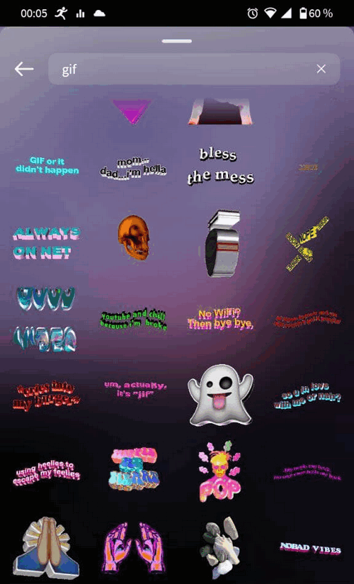
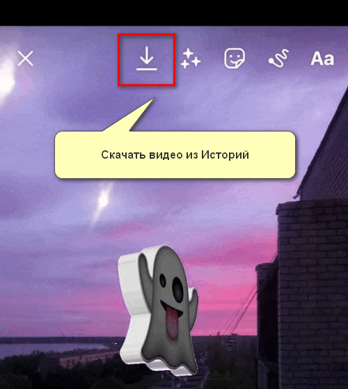
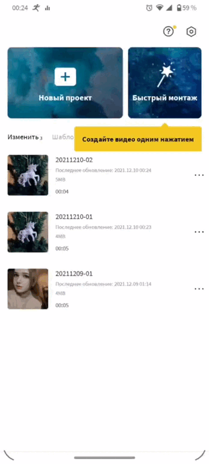
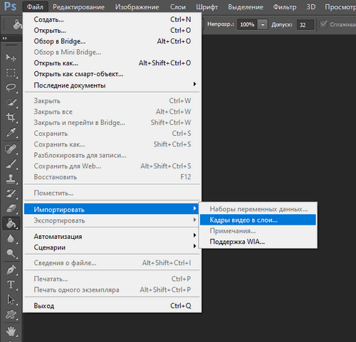
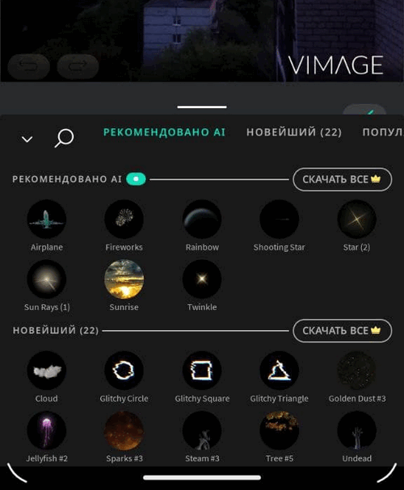
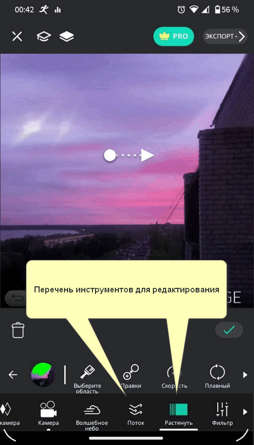
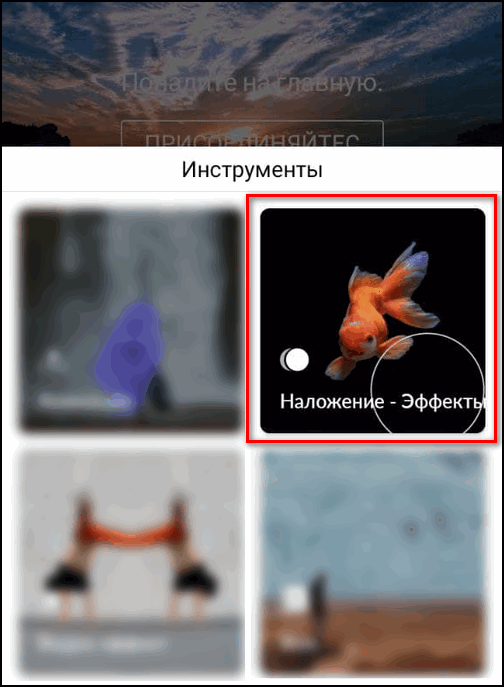
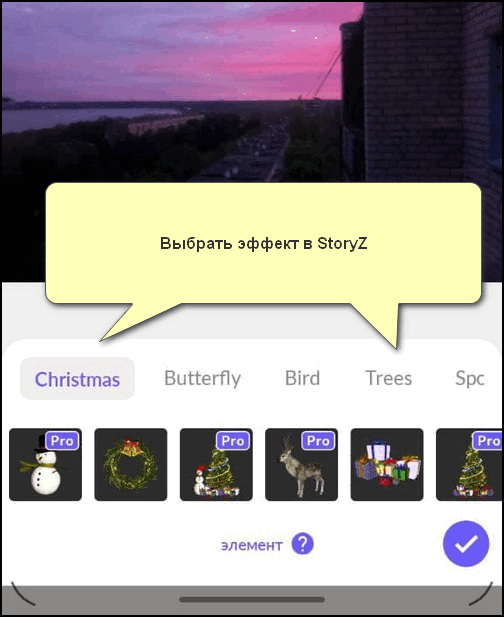

Что такое живое фото в Инстаграме и как сделать эффект

Живое фото в Инстаграме* – это стиль оформления картинки, при котором создается короткая видеозапись. На этой записи движется лишь часть изображения: развивается ткань, течет вода или идет дождь. Чтобы создать такую публикацию, используют мобильные приложения.
Что такое живое фото в Инстаграме*
Живое фото – это аналог GIF-изображениям. Их отличие в том, что на первом движется только часть изображения и в Инстаграм* нужно размещать в видеоформате.
- разнообразие контента. Подписчики обратят внимание на такую нестандартную картинку;
- возможность размещать изображения под разный тип профилей. Включая магазины, аккаунты экспертов.
Автору нужно заранее сделать снимок и перейти к поиску GIF:
- Зайти в Инстаграм* – нажать: «Опубликовать Историю».

- Выбрать фото в Галерее – добавить.
- Стикеры – ввести любое английское слово.

- Добавить наклейку на снимок – Сохранить.
Перед размещением появится кнопка «Сохранить». Если добавить на публикацию GIF-изображение, то картинка будет сохранена в формате mp4.
Помимо движущихся объектов, в Инстаграме* появился новый тренд с обработкой: на изображении заменяется только фон. Можно добавить небольшие элементы, чтобы дополнить картинку. При этом, создается эффект 3D.
Приложения для живого фото на Android
Есть популярные приложения, которые используют для создания движения на отдельных частях фото. Или же те, которые предназначены только для редактирования фона. ТОП-5 лучших:
- CapCut. Видеоредактор, который поддерживает работу с фотографиями;
- Loopsie. Платное приложение, но содержит список анимационных объектов для оформления;
- StoryZ. Приложение для работы с фотографиями, где можно применить один из эффектов;
- Zoetropic. Выделить часть изображения и привести его в движение;
- Vimage. Перечень интересных эффектов, которые можно разместить на снимке и выбрать, где будет расположена анимация.
Последний тренд, который активно используют блогеры – с CapCut. В этом видеоредаторе есть функция «Стиль», с помощью нее можно отдалять и приближать объекты:
- Зайти в Play Market – вписать в поиске название приложения.
- Установить – открыть.
- Выбрать: «Новый проект» - вкладка: «Фото».
- Указать снимок, который будет использован для редактирования.
- На временно шкале появится фото в виде видеозаписи на протяжении 3 секунд.
- Нажать по появившимся фото – выбрать раздел: «Стиль».
- 3D с приближением или по области – применить.
- Сохранить запись на смартфон.

Далее, созданный проект можно опубликовать в Инстаграме*, воспользовавшись Историями или публикациями. Обычно их добавляют в карусель, если хотят продемонстрировать товар или какой-то объект. Для личных фото подходит вариант с полноразмерным фото, а не селфи.Для Айфона
Для устройств на базе iOS список приложений такой же. Утилиты доступны в обеих платформах, поэтому названия совпадают. Чтобы сделать живое фото с помощью Vimage:
- Зайти в AppStore – Установить – открыть.
- Выбрать вариант: «Фотография» - указать нужный снимок.
- Эффекты – выбрать один из вариантов.
- Разместить на фото – сохранить видеозапись на смартфон.
В бесплатной подписке доступно свыше 30 вариантов, которые можно применить на фотографию. Различия между платной и бесплатной версией в том, что во второй ограниченный список эффектов и низкое качество.
Можно ли сделать живое фото на компьютере
Есть два способа, как на компьютере сделать живое фото в Историю Инстаграма*:
- воспользоваться эмулятором и создать с помощью приложения;
- с помощью Adobe Photoshop.
Создать с помощью Photoshop:
- Записать короткое видео – перейти в Photoshop.
- Выбрать: «Файл» - Импортировать.

- Кадры видео в слои – Сохранить материалы.
Причем, автору нужно заснять запись, которая продолжительностью будет не более 3 секунд. Также, для съемки пригодится штатив. В кадре должны меняться либо фон, либо угол обзор. К примеру, поворот вправо или поднятие камеры вверх.
Использовать живое фото для бизнеса
Для бизнес-аккаунтов также подойдет создание анимационных картинок. Такой способ актуален при демонстрации нового продукта, создания «ежедневной публикации» или забавного видео для знакомства с аудиторией. Примеры, где можно применить:
- новый продукт. С помощью CupCat сделать яркий ролик и показать товар;
- знакомство с аудиторией. Записать видео с коллегами, применить маски или фильтры;
- дымка над кофе, дыхание, движение воды. Все, что подойдет для создания ежедневных публикаций.
Такие короткие ролики размещают в публикации и снизу добавляют текст. Интересный формат съемки привлекает внимание подписчиков, поэтому у таких публикаций больше просмотров чем у обычных видео. Как создать интересный контент для бизнеса с помощью Vimage:
- Перейти в Play Market или AppStore (ссылки выше в статье).
- Скачать и установить.
- Выбрать рекомендованные или новейшие инструменты.

- Открыть – выбрать ранее созданное фото.

- Добавить на него эффект – сохранить.
Но размещать часто картинки не стоит, потому что впоследствии это перестанет быть интересным. Для бизнес-страниц используют вариант размещения «шахматка», где можно комбинировать познавательный, продающий и развлекательный контент.
Идеи для личного блога
На личной странице «живые фото» используют постоянно. Это может быть прогулка на природе, поздравления или же live-style. Примеры, где можно использовать:
- природа. Добавить шевеление у листьев, травы или воды;
- сделать на заднем плане звездное небо;
- добавить снега для зимних публикациях;
- сделать поздравление друзьям, отметив их в описании;
- добавить эффект с бабочками для летних постов.
Причем владелец страницы может изменять размер добавляемого слоя, перемещать. Подключив платные функции в Vimage, можно добавить несколько слоев и отдельно редактировать. Как сделать интересное оформление через StoryZ:
- Зайти в Play Market – скачать и установить приложение (прямая ссылка выше в статье).
- Открыть – выбрать вариант оформления: «Эффект».

- Указать фото из Галереи – выбрать эффект из списка.
- Нажать по кнопке: «Стоп», чтобы отредактировать и переместить.
- Добавить на фото – воспользоваться предпросмотром.

- Сохранить на смартфон.
В приложении можно использовать «бабочек», «огонь», «деревья», «воду». Это разделы, где каждый содержит от трех до пяти анимаций.
Делаем отдельные куски движущимися
Воспользовавшись приложением Zoetropic, владелец аккаунта сможет отредактировать снимок и оживить отдельную часть. Автор может выбрать направление движения,
- Зайти в Play Market – скачать и установить Zoetropic.
- Открыть – выбрать снимок.
- Указать инструментом «Линия» направление движения.
- Посмотреть созданный клип – сохранить на смартфон.
- фото высокого качества. Иначе при наложении нового слоя появятся пиксели;
- стараться не увеличивать объекты. Потому что в бесплатных версиях они зачастую низкого качества;
- пробовать разные приложения;
- заранее редактировать снимки, если нужно откорректировать цвет, яркость.
Перед размещением нужно проверить, как отображается видео на разных устройствах: смартфоне, планшете или компьютере. Потому что при просмотре с широкоформатного экрана, можно заметить недочеты: резкие края, анимация наложена поверх основной части фото.
В основном, авторы видео добавляют анимационные объекты позади человека. Это касается селфи или фото в полный рост, где важна модель, а не окружающее пространство.